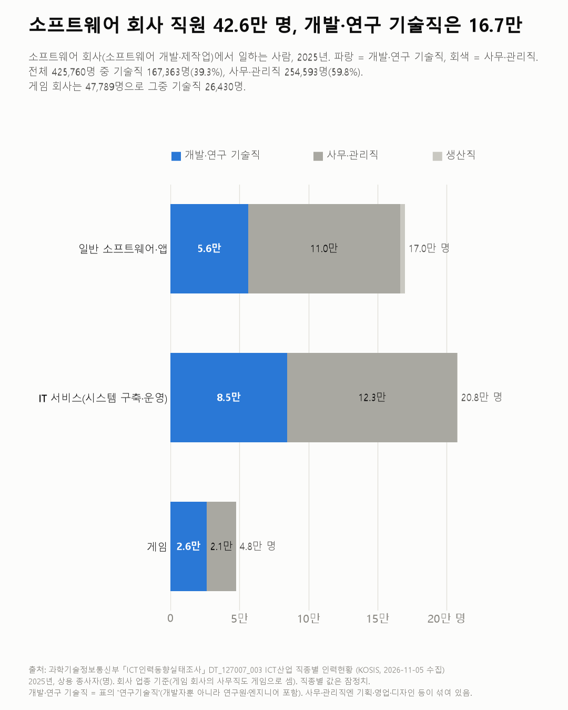

이번 주 한 컷 · 디지털·크리에이터
소프트웨어 회사 직원 42.6만 명, 개발·연구 기술직은 16.7만
16.7만
2025년 소프트웨어 회사 직원 42.6만 명 중 개발·연구 기술직 (39.3%; 사무·관리직 59.8%)
그래서?'소프트웨어 회사 = 개발자'가 아니다 — 열 명 중 네 명꼴이 기술직이고, 업계 일자리는 작년보다 조금 줄었다.

일·이직43편
 15.6%청년 실업률 5.4%, 일이 모자란 청년까지 보면 15.6%경제활동인구조사 2015~202650.5%일하는 여성(19~54세) 절반, 업무에 AI 쓴다여성의 경제활동 및 경력단절 실태조사 2025-25%정보통신업 20대 이하 일자리 3년 새 25% 줄었다임금근로일자리동향 2018~202635.2%쉬는 15~29세 35.2%는 '원하는 일자리 찾기 어려워서'비경제활동인구 부가조사 2016~202663.0%한국 여성 고용률 63.0%, 2000년엔 50.1%(15~64세)OECD 고용률 2000~2025
15.6%청년 실업률 5.4%, 일이 모자란 청년까지 보면 15.6%경제활동인구조사 2015~202650.5%일하는 여성(19~54세) 절반, 업무에 AI 쓴다여성의 경제활동 및 경력단절 실태조사 2025-25%정보통신업 20대 이하 일자리 3년 새 25% 줄었다임금근로일자리동향 2018~202635.2%쉬는 15~29세 35.2%는 '원하는 일자리 찾기 어려워서'비경제활동인구 부가조사 2016~202663.0%한국 여성 고용률 63.0%, 2000년엔 50.1%(15~64세)OECD 고용률 2000~2025돈·자산24편
 2.8%소비자물가 2.8%, 석유류는 14.9%소비자물가조사 월별 2015~2026.101경 4,200조가계 순자산 1경 4,200조 원, 2008년의 2.8배(2025 잠정)국민대차대조표4.88%주담대 금리 4.88%, 2015년 이후 가장 높아(2026.9)예금은행 가중평균금리174.4%가계 빚, 1년 소득의 174.4%(2024), 2021년엔 194.3%OECD 가계부채 2008~20249.4%한국 가계순저축률 9.4%(2024), 1988년엔 24.7%OECD 가계순저축률 1982~2024
2.8%소비자물가 2.8%, 석유류는 14.9%소비자물가조사 월별 2015~2026.101경 4,200조가계 순자산 1경 4,200조 원, 2008년의 2.8배(2025 잠정)국민대차대조표4.88%주담대 금리 4.88%, 2015년 이후 가장 높아(2026.9)예금은행 가중평균금리174.4%가계 빚, 1년 소득의 174.4%(2024), 2021년엔 194.3%OECD 가계부채 2008~20249.4%한국 가계순저축률 9.4%(2024), 1988년엔 24.7%OECD 가계순저축률 1982~2024디지털·크리에이터20편
 7,017원OTT에 한 달 평균 7,017원, 30대는 12,420원콘텐츠이용행태조사 202547.0%유튜브 등에선 인플루언서 구독 47.0%, 1위(2024)소셜미디어 이용자 조사59.0%게임 매출 23.85조 원, 모바일이 59.0%(2024)게임산업 2010~202412.6만 원가구 통신비 월 12.6만 원, 2019년부터 12만 원 안팎가계동향조사 2019~20257.5배모바일 광고비 7.79조, 지상파TV 1.04조의 7.5배(2024)방송통신광고비조사 2014~2026
7,017원OTT에 한 달 평균 7,017원, 30대는 12,420원콘텐츠이용행태조사 202547.0%유튜브 등에선 인플루언서 구독 47.0%, 1위(2024)소셜미디어 이용자 조사59.0%게임 매출 23.85조 원, 모바일이 59.0%(2024)게임산업 2010~202412.6만 원가구 통신비 월 12.6만 원, 2019년부터 12만 원 안팎가계동향조사 2019~20257.5배모바일 광고비 7.79조, 지상파TV 1.04조의 7.5배(2024)방송통신광고비조사 2014~2026가족·사회14편
 10.2%아빠 육아휴직 사용률 10.2%, 처음 두 자릿수(2024 잠정)육아휴직통계 2015~202433.2세첫아이 낳는 엄마 평균 33.2세, 1993년보다 7.0세 늦어졌다출생통계 1990~202536.6%이혼 중 결혼 20년 이상 36.6%, 4년 이하 16.3%혼인·이혼통계 1990~202548.8%신혼부부 맞벌이 59.7%, 아이 없는 부부 48.8%신혼부부통계 2015~202412.0%2025년 주소 옮긴 사람 100명당 12.0명, 2000년엔 19.0명인구이동률 1970~2025
10.2%아빠 육아휴직 사용률 10.2%, 처음 두 자릿수(2024 잠정)육아휴직통계 2015~202433.2세첫아이 낳는 엄마 평균 33.2세, 1993년보다 7.0세 늦어졌다출생통계 1990~202536.6%이혼 중 결혼 20년 이상 36.6%, 4년 이하 16.3%혼인·이혼통계 1990~202548.8%신혼부부 맞벌이 59.7%, 아이 없는 부부 48.8%신혼부부통계 2015~202412.0%2025년 주소 옮긴 사람 100명당 12.0명, 2000년엔 19.0명인구이동률 1970~2025생활·건강12편
 48.8%남자 비만 48.8%, 1998년 25.1%의 두 배 가까이국민건강영양조사 1998~202428.5%남자 담배(궐련) 흡연율 28.5%, 전자담배까지 합치면 36.0%국민건강영양조사 1998~2024226.1만 원건강보험 1인당 진료비 226.1만 원, 2000년의 8배(명목)건강보험통계 2000~20242,957.6만 vs 1,958.5만2025년 나간 한국인 2,957.6만, 들어온 외국인 1,958.5만출입국통계 2010~202577.0% → 50.6%영화관 간 사람 77.0%(2019) → 50.6%국민문화예술활동조사
48.8%남자 비만 48.8%, 1998년 25.1%의 두 배 가까이국민건강영양조사 1998~202428.5%남자 담배(궐련) 흡연율 28.5%, 전자담배까지 합치면 36.0%국민건강영양조사 1998~2024226.1만 원건강보험 1인당 진료비 226.1만 원, 2000년의 8배(명목)건강보험통계 2000~20242,957.6만 vs 1,958.5만2025년 나간 한국인 2,957.6만, 들어온 외국인 1,958.5만출입국통계 2010~202577.0% → 50.6%영화관 간 사람 77.0%(2019) → 50.6%국민문화예술활동조사창업·자영업6편
 53.7%크리에이터 업체 매출 5조 5,503억 원, 절반 넘게 광고디지털크리에이터미디어산업 실태조사 202483.5곳폐업 97.6만, 같은 해 새로 연 곳(116.8만)의 83.5% 규모국세통계 2014~202535.2%새로 사업 시작한 자영업자 35.2%, 500만 원 미만으로 시작비임금근로 부가조사 2018~202611.7%새로 생긴 기업 11.7%(2025), 사라진 기업 10.1%(2024)기업생멸행정통계 2011~202539.4%새로 연 가게 10곳 중 4곳은 온라인 판매국세청 생활업종 신규 사업자 2017~2025
53.7%크리에이터 업체 매출 5조 5,503억 원, 절반 넘게 광고디지털크리에이터미디어산업 실태조사 202483.5곳폐업 97.6만, 같은 해 새로 연 곳(116.8만)의 83.5% 규모국세통계 2014~202535.2%새로 사업 시작한 자영업자 35.2%, 500만 원 미만으로 시작비임금근로 부가조사 2018~202611.7%새로 생긴 기업 11.7%(2025), 사라진 기업 10.1%(2024)기업생멸행정통계 2011~202539.4%새로 연 가게 10곳 중 4곳은 온라인 판매국세청 생활업종 신규 사업자 2017~2025